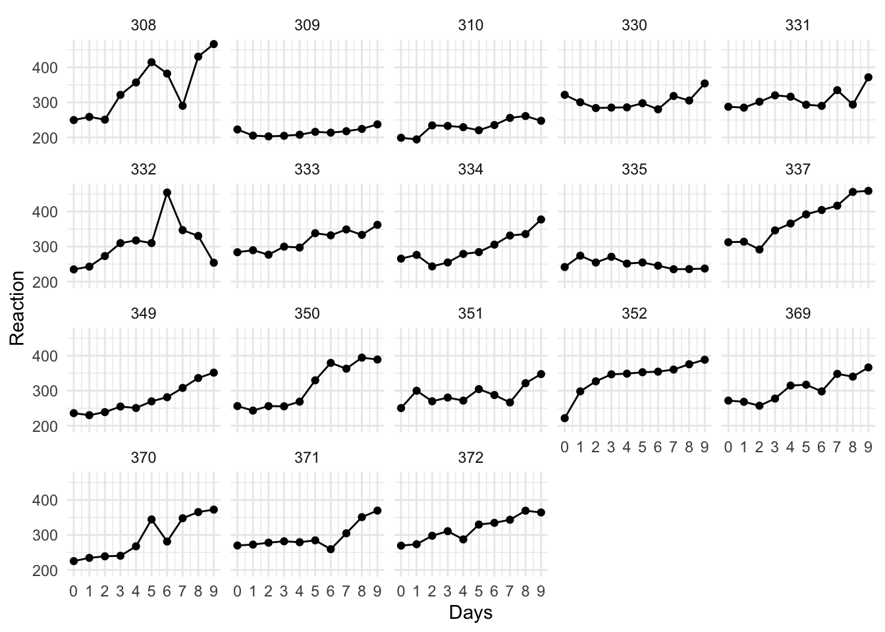
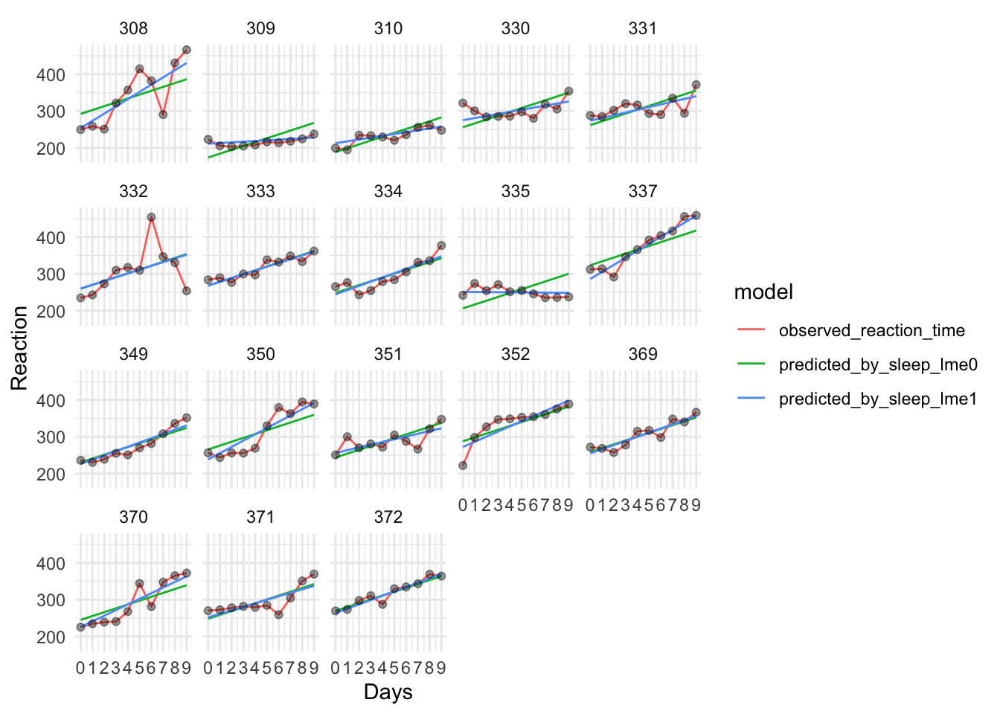

18 Общая линейная модель и ее расширения
18.1 Общая линейная модель
Обобщением множественной линейной регрессии можно считать общую линейную модель (general linear model). Общая линейная модель может предсказывать не одну, а сразу несколько объясняемых переменных в отличие от множественной линейной регрессии.
\[Y = XB\] где \(Y\) — матрица объясняемых переменных, \(X\) — матрица предикторов, \(B\) — матрица параметров.
Почти все пройденные нами методы можно рассматривать как частный случай общей линейной модели: t-тесты, коэффициент корреляции Пирсона, линейная регрессия, ANOVA.

18.2 Обобщенная линейная модель
Обобщенная линейная модель (generalized linear model) была придумана как обобщение линейной регрессии и ее сородичей: логистической регрессии и пуассоновской регрессии.
Общая линейная модель задается формулой \[Y = XB\]
Обобщенная оборачивает предиктор \(XB\) связывающей функцией (link function), которая различается для разных типов регрессионных моделей.
Давайте попробуем построить модель, в которой объясняемой переменной будет то, является ли супергерой хорошим или плохим.
heroes$good <- heroes$Alignment == "good"Обычная линейная модель нам не подходит, если распределение наших ошибок далеко от нормального. А это значит, что мы не можем использовать общую линейную модель с бинарной объясняемой переменной. Эту проблему решает логистическая регрессия, которая является частным случаем обобщенной линейной модели.
Для этого нам понадобится функция glm(), а не lm() как раньше. Ее синтаксис очень похож, но нам теперь нужно задать еще один важный параметр family = для выбора связывающей функции (в данном случае это логит-функция, которая является связующей функцией по умолчанию для биномиального семейства функций в glm()).
heroes_good_glm <- glm(good ~ Weight + Gender, heroes, family = binomial())
summary(heroes_good_glm)##
## Call:
## glm(formula = good ~ Weight + Gender, family = binomial(), data = heroes)
##
## Deviance Residuals:
## Min 1Q Median 3Q Max
## -1.8674 -1.3103 0.6334 0.9155 2.4007
##
## Coefficients:
## Estimate Std. Error z value Pr(>|z|)
## (Intercept) 1.763917 0.235410 7.493 6.73e-14 ***
## Weight -0.004253 0.001124 -3.783 0.000155 ***
## GenderMale -0.760310 0.245851 -3.093 0.001984 **
## ---
## Signif. codes: 0 '***' 0.001 '**' 0.01 '*' 0.05 '.' 0.1 ' ' 1
##
## (Dispersion parameter for binomial family taken to be 1)
##
## Null deviance: 605.22 on 477 degrees of freedom
## Residual deviance: 570.88 on 475 degrees of freedom
## (256 observations deleted due to missingness)
## AIC: 576.88
##
## Number of Fisher Scoring iterations: 4Результат очень похож по своей структуре на glm(), однако вместо \(R^2\) перед нами AIC. AIC расшифровывается как информационный критерий Акаике (Akaike information criterion) — это критерий использующийся для выбора из нескольких моделей. Чем он меньше, тем лучше модель. Как и Adjusted R2, AIC “наказывает” за большое количество параметров в модели.
Поскольку AIC — это относительный показатель качества модели, нам нужно сравнить его с AIC другой, более общей модели. Можно сравнить с моделью без веса супергероев.
heroes_good_glm_noweight <- glm(good ~ Gender, heroes, family = binomial())
summary(heroes_good_glm_noweight)##
## Call:
## glm(formula = good ~ Gender, family = binomial(), data = heroes)
##
## Deviance Residuals:
## Min 1Q Median 3Q Max
## -1.8082 -1.4164 0.6586 0.9559 0.9559
##
## Coefficients:
## Estimate Std. Error z value Pr(>|z|)
## (Intercept) 1.4178 0.1785 7.944 1.95e-15 ***
## GenderMale -0.8716 0.2012 -4.332 1.48e-05 ***
## ---
## Signif. codes: 0 '***' 0.001 '**' 0.01 '*' 0.05 '.' 0.1 ' ' 1
##
## (Dispersion parameter for binomial family taken to be 1)
##
## Null deviance: 873.81 on 698 degrees of freedom
## Residual deviance: 853.24 on 697 degrees of freedom
## (35 observations deleted due to missingness)
## AIC: 857.24
##
## Number of Fisher Scoring iterations: 4AIC стал больше, следовательно, мы выберем модель с весом супергероев.
18.3 Модель со смешанными эффектами
Модели со смешанными эффектами (mixed-effects models) — это то же самое, что и иерархическая регрессия (hierarchical regression) или многоуровневое моделирование (multilevel modelling). Этому методу повезло иметь много названий - в зависимости от области, в которой он используется. Модели со смешанными эффектами позволяет включать в линейную регрессию не только фиксированные эффекты (fixed effects), но и случайные эффекты (random effects).
Для экспериментальных дисциплин это интересно тем, что в таких моделях можно не усреднять показатели по испытуемым или образцам, а учитывать влияние соотвествующей группирующей переменной как случайный эффект. В отличие от обычного фактора как в линейной регрессии или дисперсионном анализе (здесь он называется фиксированным), случайный эффект не интересует нас сам по себе, а его значения считаются случайной переменной.
Смешанные модели используются в самых разных областях. Они позволяют решить проблему зависимости наблюдений без усреднения значений по испытуемым или группам, что повышает статистическую мощность.
Для работы со смешанными моделями в R есть два известных пакета: nlme и более современный lme4.
install.packages("lme4")library(lme4)Для примера возьмем данные исследования влияния депривации сна на время реакции.
data("sleepstudy")Данные представлены в длинном формате: каждая строчка — это усредненное время реакции для одного испытуемого в соответствующий день эксперимента.
sleepstudy %>%
ggplot(aes(x = Days, y = Reaction)) +
geom_line() +
geom_point() +
scale_x_continuous(breaks = 0:9) +
facet_wrap(~Subject) +
theme_minimal()
Можно заметить, что, в среднем, время реакции у испытуемых повышается от первого к последнему дню. С помощью смешанных моделей мы можем проверить, различается ли скорость возрастания времени реакции от дня к дню у разных испытуемых.
Для этого мы сравниваем две модели, одна из которых является “вложенной” в другую, то есть усложненной версией более общей модели. В данном случае, более общая модель предполагает, что время реакции увеличивается у всех испытуемых одинаково, а испытуемые различаются только средним временем реакции.
sleep_lme0 <- lmer(Reaction ~ Days + (1 | Subject), sleepstudy)
sleep_lme1 <- lmer(Reaction ~ Days + (Days | Subject), sleepstudy)Визуализируем предсказания двух моделей:
sleepstudy$predicted_by_sleep_lme0 <- predict(sleep_lme0)
sleepstudy$predicted_by_sleep_lme1 <- predict(sleep_lme1)sleepstudy %>%
rename(observed_reaction_time = Reaction) %>%
pivot_longer(cols = c(observed_reaction_time, predicted_by_sleep_lme0, predicted_by_sleep_lme1), names_to = "model", values_to = "Reaction") %>%
ggplot(aes(x = Days, y = Reaction)) +
geom_line(aes(colour = model)) +
#geom_line(aes(y = predicted_by_M1), colour = "orange") +
#geom_line(aes(y = predicted_by_M2), colour = "purple") +
geom_point(data = sleepstudy, alpha = 0.4) +
scale_x_continuous(breaks = 0:9) +
facet_wrap(~Subject) +
theme_minimal()
Зеленая линия (нулевая модель) имеет везде один и тот же наклон, а синяя (альтернативная модель) имеет разный наклон у всех испытуемых.
Есть несколько способов сравнивать модели, например, уже знакомый нам AIC. Кроме того, можно сравнить две модели с помощью теста хи-квадрат, восполльзовавшись функцией anova().
anova(sleep_lme0, sleep_lme1)Модель со случайным наклоном прямой оказалась лучше, о чем нам говорят как более низкие AIC и BIC, так и тестирование с помощью хи-квадрат.